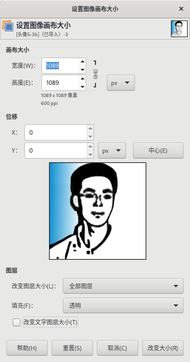

图像→画布大小
此命令没有快捷键。
此命令可以修改画布的尺寸。

图像→画布大小
默认情况下，画布的尺寸与图层的尺寸一致。
画布大小 命令会打开“设置图像画布大小”对话框，您可以放大或缩小画布尺寸，还可以修改图层的尺寸。
放大画布时，如果图层尺寸没有同步放大，那么会在图像内容周围添加透明空间，以棋盘方格显示。此透明空间在当前状态下无法绘图，如果想在此空间进行绘图：
使用菜单 图像→平整图像 命令，透明空间会填充背景色，之后可以进行绘图操作。
使用菜单 图层→图层到图像大小 命令，放大当前图层尺寸到与图像尺寸相同，然后绘图。
创建新图层，然后在新图层上绘图。
当您缩小画布时，可见的区域会被裁剪，裁剪后图层的尺寸要大于画布的尺寸。
缩小画布尺寸时，预览中新画布会出现一个边框，点击并拖动可以相对这个边框来移动图像的位置。
宽度/高度
您可以设置画布的宽度和高度，默认单位是像素，可以选择其它单位，例如百分比。
如果宽度和高度右边的”链”没有断开，那么宽度和高度会彼此保持相同的相对比例。也就是说，您改变其中一个值，另一个值会自动产生相应的变化。如果您点击”链”来断开链，则宽度和高度可以分别独立设置。
无论您使用什么单位，以像素为单位的图像尺寸和当前分辨率都会显示在宽度和高度区域的下方。您不能在画布大小对话框中修改分辨率；如果要修改分辨率，请使用菜单 图像→打印大小 对话框。
位移
位移值可以在画布上重新定位整个图像。
您可以在预览中看到画布的尺寸和内容。
如果画布尺寸变小，预览会显示一个边框，用来帮助您确定图像的相对位置。
X和Y 用来指定图像左上角相对于画布左上角的坐标。
当画布小于图像时，X和Y 可以为负值。
您可以直接点击并拖动图像来移动图像位置，也可以通过修改输入框中的值来移动图像位置。如果您点击输入框右侧的上下小箭头，那么每次点击，数值会增加/减少一个像素(单位)。另外，当鼠标指针在输入框中闪烁时，您可以使用键盘上的方向键操作，上方向键和下方向键按一次可以改变一个像素(单位)，PageUp和PageDown键按一次会改变10个像素(单位)。
中心
此按钮可以将图像在画布上居中放置。